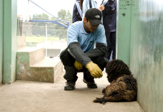

Nuestros Programas

Adopción Responsable
Nuestro programa de adopción busca dar una segunda oportunidad a animales rescatados, promoviendo la adopción responsable para brindarles un hogar lleno de amor.
Refugios Temporales
Ofrecemos refugios seguros para animales sin hogar, dándoles el tiempo necesario para recuperarse y encontrar una familia adoptiva.
Educación y Concientización
A través de talleres y campañas, educamos a la comunidad sobre el bienestar animal, incentivando el respeto y la protección de todas las especies.